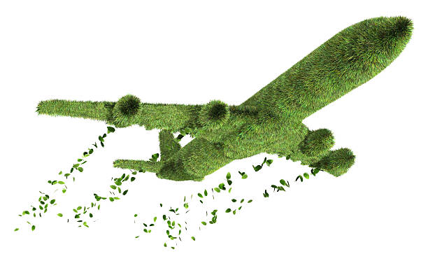
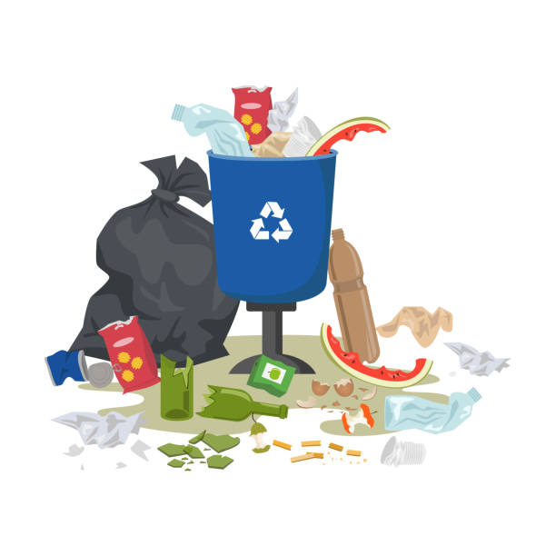
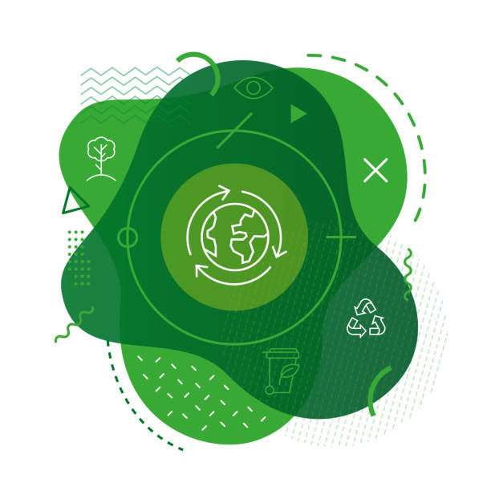
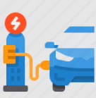
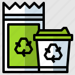

Risparmia energia in casa
Buona parte della nostra elettricità e del nostro riscaldamento sono alimentati da carbone, petrolio e gas. Utilizza meno energia abbassando gli impianti di riscaldamento e raffreddamento, passando a lampadine a LED e a dispositivi elettrici efficienti sotto il profilo energetico, lavando la biancheria con l'acqua fredda o stendendo i panni ad asciugare anziché usare un'asciugatrice.
Cammina, pedala o usa i trasporti pubblici

Le strade del mondo sono intasate di veicoli, la maggior parte dei quali brucia diesel o benzina. Camminare o andare in bicicletta anziché guidare ridurrà le emissioni di gas a effetto serra e aiuterà la tua salute e la tua forma fisica. Per le distanze più lunghe, valuta l'ipotesi di prendere un treno o un autobus e ricorri all'uso condiviso dell'automobile ogniqualvolta possibile.
Mangia più verdura
Mangiare più verdura, frutta, grani interi, legumi, frutta secca e semi e meno carne e latticini può ridurre in maniera considerevole il tuo impatto ambientale. In genere la produzione di alimenti di origine vegetale dà luogo a minori emissioni di gas a effetto serra e richiede meno energia, terra e acqua.
Pensa a come viaggiare

Gli aerei bruciano grandi quantità di combustibili fossili, producendo considerevoli emissioni di gas a effetto serra. Di conseguenza volare meno è uno dei modi più rapidi per ridurre il tuo impatto ambientale. Se possibile, partecipa a riunioni virtuali, prendi il treno oppure evita del tutto i viaggi a lunga distanza.
Butta meno cibo

Quando butti il cibo stai sprecando anche le risorse e l'energia che sono stati utilizzati per coltivarlo, produrlo, confezionarlo e trasportarlo. E, quando marcisce in una discarica, il cibo produce metano, un potente gas a effetto serra. Perciò usa ciò che compri e composta gli eventuali avanzi.
Riduci, riusa, ripara e ricicla

I dispositivi elettronici, gli abiti e altri articoli che compriamo provocano emissioni di carbonio in ogni fase della produzione, dall'estrazione delle materie prime fino alla fabbricazione e al trasporto dei prodotti al luogo di vendita. Per proteggere il nostro clima, acquista meno oggetti, compra di seconda mano, ripara ciò che puoi e ricicla.
Cambia la fonte di energia di casa tua
Chiedi alla tua società di fornitura se l'energia di casa tua proviene dal petrolio, dal carbone o dal gas. Se possibile, verifica se puoi passare a fonti rinnovabili come l'energia eolica o solare. Oppure installa pannelli solari sul tuo tetto per produrre l'energia per la tua casa.
Passa a un veicolo elettrico

Se hai in programma di comprare un'auto, considera l'ipotesi di acquistare un veicolo elettrico, visto che i modelli immessi in commercio sono sempre più numerosi e convenienti. Pur continuando a funzionare grazie all'elettricità prodotta dai combustibili fossili, le auto elettriche contribuiscono a ridurre l'inquinamento atmosferico e producono molte meno emissioni di gas a effetto serra rispetto ai veicoli alimentati a gas o a diesel.
Scegli prodotti rispettosi dell'ambiente

Tutto ciò per cui spendiamo denaro ha un impatto sul pianeta. Hai il potere di scegliere quali prodotti e servizi sostenere. Per ridurre il tuo impatto ambientale, acquista alimenti locali e di stagione e scegli prodotti di imprese che utilizzano le risorse in maniera responsabile e si impegnano a ridurre le loro emissioni di gas e i loro rifiuti.
Fai sentire la tua voce
Fai sentire la tua voce e convinci altre persone a prendere parte all'azione. Si tratta di uno dei modi più rapidi ed efficaci per fare la differenza. Parla con i tuoi vicini, colleghi, amici e familiari. Fai sapere agli imprenditori che sostieni i cambiamenti audaci. Esorta i leader locali e mondiali ad agire adesso.